전자계산기기능사 (2009-03-29 기출문제)
1과목: 전기전자공학
1. 이미터 접지 증폭회로에서 IB가 -20μA 에서 -50μA 로 변화하면 IC는 -1mA에서 -4mA로 변화한다. 베이스 접지 증폭회로에서의 전류증폭률 α의 값은 약 얼마인가?
- 0.9
- 0.99
- 90
- 99
(정답률: 47%)
2. 100Ω의 저항에 10A의 전류를 1분간 흐르게 하였을때 발열량은 몇 Kcal 인가?
- 36Kcal
- 72Kcal
- 144Kcal
- 288Kcal
(정답률: 65%)

3. 다음과 같은 회로의 명칭은?
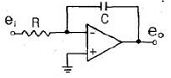
- 적분기
- 미분기
- 가산기
- 이상기
(정답률: 60%)
4. 진폭변조와 비교하여 주파수 변조에 대한 설명으로 적합하지 않은것은?
- 신호대 잡음비가 좋다.
- 충격성 잡음이 많아진다.
- 초단파 통신에 적합하다.
- 점유 주파수 대역폭이 넓다.
(정답률: 42%)
5. 다음과 같은 회로에서 4Ω의 저항에 1.5A의 전류가 흐르고 있다면 A,B 단자 사이의 전위차는 몇 V 인가?
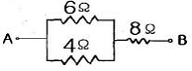
- 20V
- 26V
- 34V
- 42V
(정답률: 45%)
6. 다음중 이미터 플로어의 특징에 대한 설명으로 적합하지 않은 것은?
- 입력전압과 출력전압의 위상은 동상이다.
- 전압 증폭도가 1 보다 작으므로 전력증폭이 되지 않는다.
- 임피던스가 높은 회로와 낮은회로 사이의 임피던스 정합에 많이 사용된다.
- 입력 임피던스는 이미터 접지 증폭회로에 비하여 매우 높다.
(정답률: 40%)
7. 다음중 단측파대(SSB) 통신에 사용되는 변조회로는?
- 컬렉터 변조회로
- 베이스 변조회로
- 주파수 변조회로
- 링 변조회로
(정답률: 48%)
8. 전원회로에서 부하시의 전압이 100V일때 전압 변동률은 10%였다고 한다. 무부하시의 전압은 약 몇 V 인가?
- 90V
- 100V
- 110V
- 120V
(정답률: 52%)
9. 다음과 같은 연산증폭기 회로에서 출력 전압 V0는 몇 V인가?
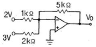
- -17.5V
- 18.5V
- 9.5V
- -20.5V
(정답률: 42%)
10. 다음 중 RC 결합 증폭회로에 대한 설명으로 적합하지 않은것은?
- 비교적 주파수 특성이 좋다
- 회로가 복잡하고 비경제적이다.
- 전원 이용률이 나쁘다.
- 입력 임피던스가 낮고 출력 임피던스가 높으므로 임피던스 정합이 어렵다.
(정답률: 43%)
2과목: 전자계산기구조
11. 컴퓨터의 내부구조를 설명할 때 사용하는 연산방식이 아닌것은?
- 2진수 연산
- 6진수 연산
- 8진수 연산
- 16진수 연산
(정답률: 81%)
12. 중앙처리장치의 간섭을 받지 않고 기억장치에 접근하여 입출력 동작을 제어하는 방식은?
- DMA 방식
- 스트로브 제어 방식
- 핸드쉐이킹 제어방식
- 채널에 의한 방식
(정답률: 76%)
13. 16진수 A7을 2진수로 표현하면 몇 비트가 필요한가?
- 6
- 8
- 10
- 16
(정답률: 69%)
14. 컴퓨터의 연산기가 수행하는 논리 연산 명령에 해당하지 않는것은?
- AND
- OR
- COMPLEMENT
- MOVE
(정답률: 51%)
15. 7비트로 한문자를 나타내며 128문자까지 나타낼 수 있고 데이터 통신과 소형 컴퓨터에 많이 사용하는 코드는?
- ASCII 코드
- GRAY 코드
- EBCDIC 코드
- 표준 BCD 코드
(정답률: 86%)
16. 주소지정방식 중에서 명령어 내의 주소부에 실제 데이터 값을 지정하는 것은?
- 즉시주소 지정방식
- 직접주소 지정방식
- 간접주소 지정방식
- 계산에 의한 주소 지정방식
(정답률: 36%)
17. 다음 중 연산장치 구성에서 연산에 관계되는 상태와 외부 인터럽트 신호를 나타내어 주는것은?
- 누산기
- 데이터 레지스터
- 가산기
- 상태 레지스터
(정답률: 64%)
18. 레지스터의 일종으로 산술연산이나 논리연산의 결과를 일시적으로 기억시키는 장치는?
- 오퍼레이터
- 시프터
- 메모리
- 누산기
(정답률: 82%)
19. 다음 명령어중 제어 명령어에 속하는 것은?
- 로드(load)
- 무브(move)
- 점프(jump)
- 세트(set)
(정답률: 47%)
20. 2진수 1100의 2의 보수는?
- 0100
- 1100
- 0101
- 1001
(정답률: 75%)
21. 다음중 디지털 컴퓨터와 관계가 깊은것은?
- 연산방식은 미적분 연산이다.
- 주요 구성 회로는 논리 회로이다.
- 가격이 싸고 프로그램이 거의 불필요하다.
- 입력형식이 길이,각도,온도,압력 등의 물리량이다
(정답률: 61%)
22. 512 × 8 bit EAROM의 총 용량은 몇 비트인가?
- 8bit
- 512bit
- 4Kbit
- 8Kbit
(정답률: 69%)
23. 입출력장치를 구별하여 선택하고자 한다. 다음 설명이 의미하는 방식으로 옳은것은?
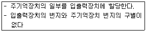
- 격리형 입출력방식
- 메모리 맵 입출력방식
- 혼합형 입출력방식
- 버스형 입출력방식
(정답률: 48%)
24. 2개의 Zone Bit와 4개의 Digit Bit로 구성되어 있으며 6비트로 한문자를 표현하는 코드는?
- BCD 코드
- EBCDIC 코드
- ASCII 코드
- BINARY 코드
(정답률: 46%)
25. 양쪽 방향으로 신호의 전송이 가능하기는 하나 어떤 순간에는 반드시 한쪽방향으로만 전송이 이루어지는 통신방식은?
- 단방향 통신방식
- 반이중 통신방식
- 전이중 통신방식
- 우회 통신방식
(정답률: 74%)
26. 마이크로 오퍼레이션에 대한 다음 정의중 옳은것은?
- 컴퓨터의 빠른 계산동작
- 2진수 계산에서 쓰이는 동작
- 플립플롭 내에서 기억되는 동작
- 레지스터 상호간에 저장된 데이터의 이동에 의해 이루어지는 동작
(정답률: 62%)
27. 컴퓨터의 기본기능에 해당하지 않는 것은?
- 판단 기능
- 연산 기능
- 제어 기능
- 기억 기능
(정답률: 77%)
28. 다음중 고정 소수점 표현방식이 아닌것은?
- 부호와 절대치 표현
- 1의 보수에 의한 표현
- 2의 보수에 의한 표현
- 9의 보수에 의한 표현
(정답률: 82%)
29. 다음에서 설명하고 있는 디스플레이 장치는?
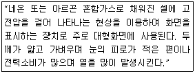
- 차세대 디스플레이(OLED)
- LCD 디스플레이
- 플라즈마 디스플레이
- 전계 방출형 디스플레이(FED-field emission display)
(정답률: 71%)
30. 다음중 컴퓨터의 출력장치와 관계가 먼것은?
- 라인 프린터
- 카드 천공 장치
- 영상 표시 장치
- 증폭장치
(정답률: 62%)
3과목: 프로그래밍일반
31. 원시 프로그램을 구성하는 각각의 명령문을 한줄씩 명령문 단위로 번역하여 직접 실행하기 때문에 문법 오류를 쉽게 수정할 수 있으나 목적 프로그램이 생성되지 않고 프로그램 수행속도가 느린 단점이 있는것은?
- 어셈블러
- 인터프리터
- 컴파일러
- 전처리기
(정답률: 52%)
32. C 언어에서 사용되는 문자열 출력 함수는?
- printchar( )
- prints( )
- putchar( )
- puts( )
(정답률: 76%)
33. 프로그램 작성시 플로우차트를 작성하는 이유로 거리가 먼것은?
- 프로그램을 나누어 작성할 때 대화의 수단이 된다.
- 프로그램의 수정을 용이하게 한다.
- 에러발생시 책임구분을 명확히 한다.
- 논리적인 단계를 쉽게 이해할 수 있다.
(정답률: 55%)
34. 운영체제의 운영 기법중 다음 설명에 해당하는것은?
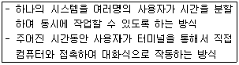
- Batch Processing System
- Multi Programming System
- Time sharing System
- Parallel Processing System
(정답률: 80%)
35. 고급언어를 기계어로 바꾸는것은?
- 컴파일러
- 로더
- DBMS
- Operating System
(정답률: 77%)
36. 프로그램의 실행과정으로 옳은것은?
- 원시프로그램-목적프로그램-로드모듈-실행
- 로드모듈-목적프로그램-원시프로그램-실행
- 원시프로그램-로드모듈-목적프로그램-실행
- 목적프로그램-원시프로그램-로드모듈-실행
(정답률: 66%)
37. 운영체제에 대한 설명으로 옳지 않은것은?
- 운영체제는 컴퓨터를 편리하게 사용하고 컴퓨터 하드웨어를 효율적으로 사용할 수 있도록 한다
- 운영체제는 컴퓨터 사용자와 컴퓨터 하드웨어간의 인터페이스로서 동작하는 일종의 하드웨어 장치이다.
- 운영체제는 작업을 처리하기 위해서 필요한 CPU,기억장치, 입출력장치 등의 자원을 할당 관리해주는 역할을 수행한다.
- 운영체제는 다양한 입출력 장치와 사용자 프로그램을 통제하여 오류와 컴퓨터의 부적절한 사용을 방지하는 역할을 수행한다.
(정답률: 64%)
38. 객체 지향 기법에서 객체가 메시지를 받아 실행해야 할 객체의 구체적인 연산을 정의한 것은?
- 애트리뷰트
- 메시지
- 클래스
- 메소드
(정답률: 43%)
39. 프로그램 개발 과정 단계중 프로그래밍 과정의 모든 자료, 입출력 설계, 순서도, 기타 운영 절차나 지침을 체계적으로 관리하는 것과 가장 밀접한 관계가 있는 것은?
- 문제 분석
- 입출력 설계
- 프로그래밍 작성
- 프로그램의 문서화
(정답률: 68%)
40. 독자적으로 번역된 여러개의 목적 프로그램과 프로그램에서 사용되는 내장 함수들을 하나로 모아서 컴퓨터에서 실행 가능하도록 하는것은?
- 스프레드시트
- 에디터
- 디버거
- 링커
(정답률: 51%)
4과목: 디지털공학
41. 다음중 입력이 모두 같으면 0, 다르면 1 로 되는 논리 회로는?
- 논리곱(AND) 회로
- 논리합(OR) 회로
- 부정(NOT) 회로
- 배타논리합(EX-OR) 회로
(정답률: 69%)
42. 다음과 같은 논리식에서 Z=0이 되는 입력 A,B,C의 조건은?
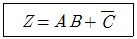
- A=0 B=0 C=0
- A=1 B=1 C=0
- A=1 B=1 C=1
- A=0 B=1 C=1
(정답률: 61%)
43. JK 플립플롭을 T 플립플롭으로 이용하기 위한 방법은?
- J=0 K=0
- K와 Q를 연결한다
- J=1 K=1
- J와 Q를 연결한다
(정답률: 66%)
44. 다음의 논리게이트와 기능이 같은 부 논리 게이트는?
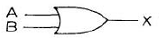
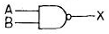
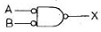
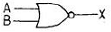
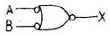
(정답률: 46%)
45. 데이터의 일시적인 보존이나 디지털 신호의 지연등에 사용되는 플립플롭은?
- RS 플립플롭
- JK 플립플롭
- D 플립플롭
- T 플립플롭
(정답률: 75%)
46. 한 수에서 다음 수로 진행할 때 오직 한비트만 변화하기 때문에 연속적으로 변화하는 양을 부호화 하는데 적합한 코드는?
- 3초과 코드
- BCD 코드
- 그레이 코드
- 패리티 코드
(정답률: 52%)
47. 다음 연산은 불 대수의 기본 법칙중 무엇인가?
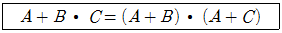
- 교환법칙
- 결합법칙
- 분배법칙
- 드모르간 법칙
(정답률: 65%)
48. 다음중 전감산기의 출력 D(차)와 결과가 같은것은?
- 전가산기 S(합) 출력
- 반가산기 C(자리올림수)
- 전감산기 B(자리내림수)
- 전가산기 C(자리올림수)
(정답률: 38%)
49. 2진수 1011을 8진수로 바꾸면?
- 11
- 13
- 15
- 17
(정답률: 60%)
50. 다음중 그 값이 다른 하나는?
- (16)10
- (F)16
- (17)8
- (1111)2
(정답률: 63%)
51. 다음 블록도의 명칭으로 적당한 것은?
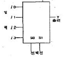
- 가산기
- 디멀티플렉서
- 디코더
- 멀티플렉서
(정답률: 51%)
52. 다음 플립플롭의 명칭은?
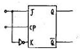
- JK FF
- D FF
- T FF
- RST FF
(정답률: 41%)
53. 다음과 같은 진리표를 갖는 논리회로는?
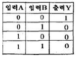
- NOR 게이트
- NOT 게이트
- NAND 게이트
- AND 게이트
(정답률: 59%)
54. 반가산기에서 입력되는 변수를 A와 B, 계산결과의 합을 S, 자리올림을 C라 하면 합과 자리올림이 바르게 표현된것은?
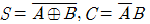
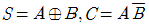
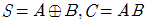
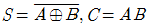
(정답률: 46%)
55. 다음 기본 논리 게이트와 같은 결과를 가지는 회로도는?
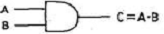
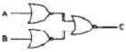
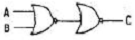
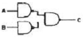
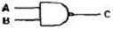
(정답률: 43%)
56. 펄스가 입력되면 현재와 반대의 상태로 바뀌게 하는 토글 상태를 만드는 회로는?
- D형 플립플롭
- T형 플립플롭
- 주종 플립플롭
- 레지스터형 플립플롭
(정답률: 81%)
57. 다음중 10진수 365를 3초과 코드로 표현하면?
- 0011 0110 0101
- 0110 1001 1000
- 0011 0110 0101 1100
- 11110011 11110110 11110101
(정답률: 52%)
58. 다음중 오류검출 뿐 아니라 정정 할 수도 있는 코드는?
- BCD 코드
- 그레이 코드
- 패리티 코드
- 해밍 코드
(정답률: 85%)
59. 다음 JK 플립플롭 여기표(excitation table)에 들어갈 값은? (단 X는 무관조건이다)
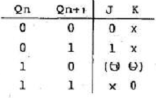
- (ㄱ) : 1, (ㄴ): X
- (ㄱ) : X, (ㄴ): 1
- (ㄱ) : X, (ㄴ): 0
- (ㄱ) : 0, (ㄴ): X
(정답률: 62%)
60. 조합 논리회로에 해당하지 않는 것은?
- 비교 회로
- 패리티 체크 회로
- 인코더 회로
- 계수 회로
(정답률: 45%)
저항 R = 100Ω
전압 V = I x R = 10A x 100Ω = 1000V
전력 P = V x I = 1000V x 10A = 10000W
1분간의 발열량 = 10000W x 60s = 600000J
1Kcal = 4184J
600000J ÷ 4184J/Kcal = 143.5Kcal (소수점 이하 반올림)
따라서, 발열량은 144Kcal이다.